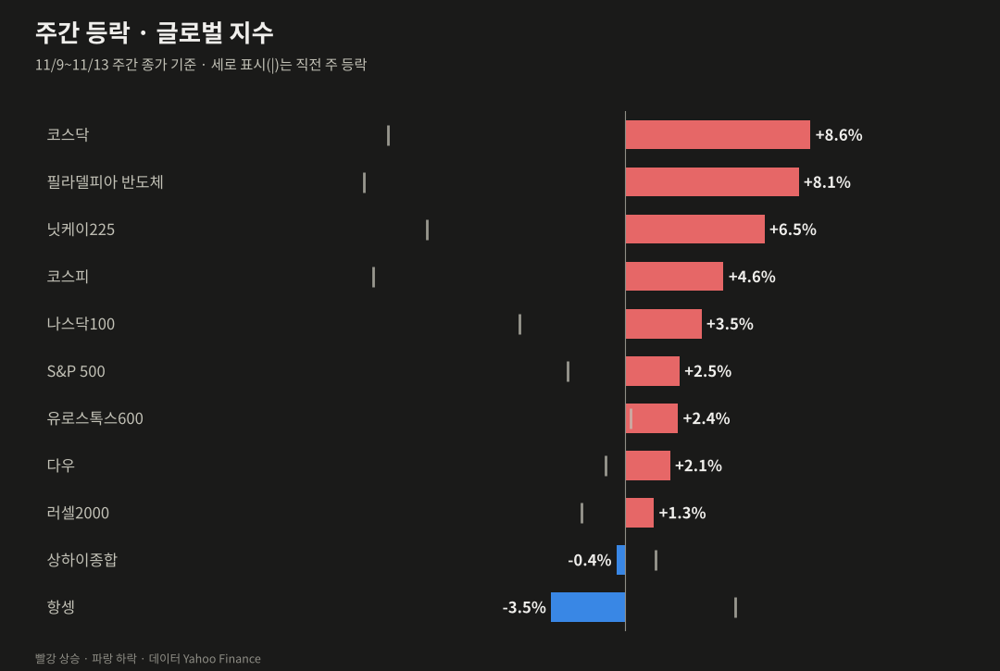
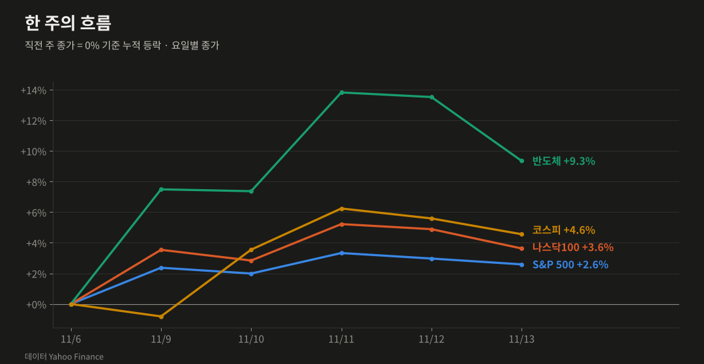
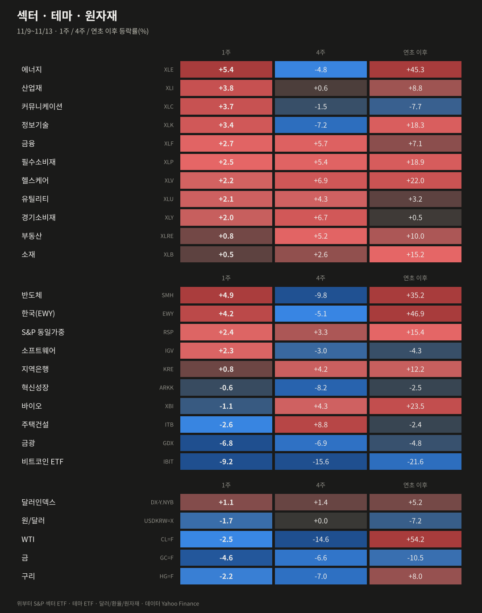
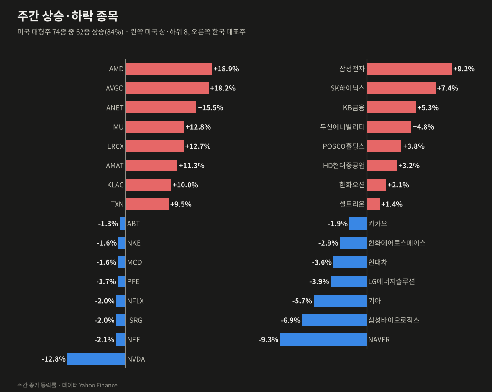
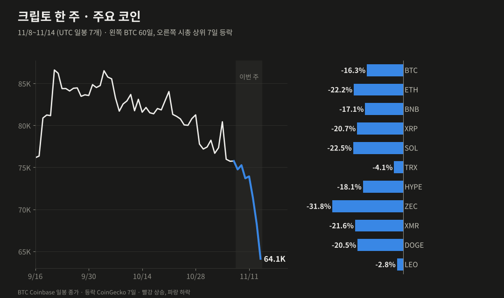
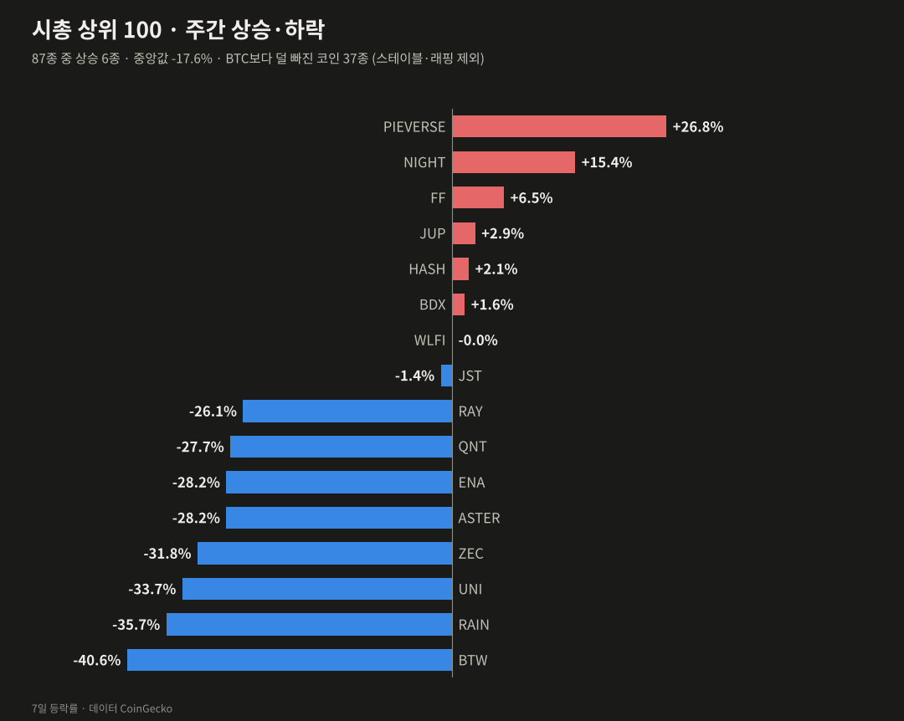
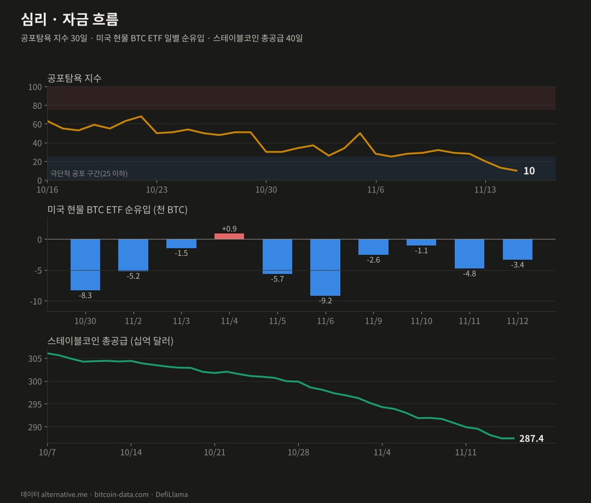

엔비디아는 창업자를 잃고, 비트코인은 15% 빠졌다: 반등한 주식과 무너진 코인
S&P 500은 5주 만에 올랐고 반도체 지수는 8% 뛰었어요. 같은 주에 비트코인은 7만 달러를 내주고 6만 4천 달러까지 밀렸어요. 두 시장이 정반대로 움직인 이유를 숫자로 정리했어요.
30초 요약
- S&P 500 +2.5%, 나스닥100 +3.5%, 반도체(SOX) +8.1%로 5주 만에 주간 상승했어요. 다만 직전 주 낙폭의 절반가량만 되찾았어요.
- 젠슨 황 CEO가 물러난 엔비디아는 한 주간 12.8% 내렸지만, AMD와 브로드컴은 18%씩 올랐어요. 돈이 AI를 떠난 게 아니라 AI 안에서 옮겨갔어요.
- 미국 10년물 금리는 30bp 올라 5.15%가 됐고, 12월 금리 인상이 가격에 다 반영됐어요. 주가와 금리가 함께 오른 반등이에요.
- 코스피 +4.6%, 코스닥 +8.6%. 외국인은 삼성전자를 사고 SK하이닉스를 팔았어요.
- 비트코인 -15.4%, 이더리움 -20.9%. 공포탐욕 지수는 10까지 내려왔고, ETF와 스테이블코인에서 돈이 함께 빠졌어요.
- 다음 주는 엔비디아 실적(수 새벽), FOMC 의사록(목 새벽), Anthropic 상장이 한꺼번에 몰려 있어요.
주식: 5주 만의 반등, 그런데 금리도 같이 올랐다
엔비디아가 창업자를 잃은 주에 S&P 500은 2.5% 올랐어요. 8월 이후 가장 큰 주간 상승이에요.
이번 주 핵심 3가지
- 엔비디아 -12.8%, AMD·브로드컴 +18%. AI 안에서 자리만 바뀜
- 10년물 5.15%(+30bp), 12월 금리 인상 완전 반영
- 외국인 삼성전자 1.2조 매수, SK하이닉스 1.1조 매도

무슨 일이 있었나
월요일: 중동 긴장 완화로 4월 이후 최대 상승
미국의 이란 추가 공습 가능성이 낮다는 발언이 나오면서 유가가 급락했고, S&P 500은 하루에 2.4% 올랐어요. 직전 주에 VIX가 급등하며 쌓였던 공포가 먼저 풀렸어요.

화요일: 뜨거운 물가, 12월 금리 인상 반영
10월 소비자물가가 전월 대비 0.4%, 근원은 0.3% 올랐어요. 2년물 금리가 하루에 17bp 뛰었고 12월 금리 인상이 선물 시장에 모두 반영됐어요. 그런데도 S&P 500은 0.4% 내리는 데 그쳤어요.

수~목요일: 젠슨 황 사임, 그리고 AI 내부의 자리 이동
수요일에는 코어위브가 고객 선급금 소식에 25% 오르며 반도체 지수가 5.7% 뛰었어요. 목요일 엔비디아 이사회가 젠슨 황의 사임을 받아들이자 엔비디아는 내렸지만 AMD, 브로드컴, 아리스타가 올라 지수 충격을 대부분 메웠어요.
금요일: 반도체 되밀림, 10년물 5.15%
AMD가 8.8% 내리는 등 주중 급등분 일부를 반납했어요. 생산자물가는 예상보다 낮았지만 연준 인사들이 추가 긴축을 시사하면서 10년물은 5.15%로 마감했어요. 그래도 S&P 500 종목은 오른 쪽이 더 많았어요.
한국: 반등했지만 금요일에 꺾였다
코스피는 4.6% 오른 5,290으로 마감했어요. 금요일 장중 5,504까지 올랐다가 외국인이 매도로 돌아서며 상승분을 모두 내줬어요. 주간으로 외국인은 삼성전자를 약 1조 2천억 원 사고 SK하이닉스를 약 1조 1천억 원 팔았어요.

숫자 뒤의 인사이트
다음 주 관전 포인트
- 11/18(수) 06:20경 엔비디아 실적: 임시 CEO 체제의 첫 발표예요. 숫자보다 가이던스와 고객사 주문 언급이 중요해요.
- 11/19(목) 04:00 FOMC 10월 의사록: 12월 인상이 이미 가격에 들어가 있어서, 1월 추가 인상 단서가 나오는지가 관건이에요.
- 11/17(화) 22:30 미국 10월 소매판매: 연말 쇼핑 시즌 직전의 소비 체력을 보여줘요. 월마트·홈디포 실적도 같은 주에 나와요.
- 미 10년물 5.2% 안팎: 이번 주 주가는 금리 상승을 버텼지만, 더 오르면 성장주 부담이 커져요.
- 코스피 5,500선: 금요일 장중 5,504까지 갔다가 5,290으로 밀렸어요. 외국인 매수가 이어지는지 확인이 필요해요.
크립토: 7만 달러 붕괴, 돈이 시장 밖으로 나갔다
비트코인이 한 주에 15% 내려 6만 4천 달러가 됐어요. 8월 이후 가장 낮은 수준이에요.
이번 주 핵심 3가지
- 7만 달러 이탈 뒤 하루 13억 달러 넘게 강제 청산
- 현물 ETF 7거래일 연속 순유출, 스테이블 공급 -45억 달러
- 알트가 더 빠짐: ETH -21%, SOL -22%, ETH/BTC -6.6%

무슨 일이 있었나
금리 인상 우려와 강한 달러
12월 금리 인상이 가격에 모두 반영되고 달러인덱스가 19개월 만의 최고치로 오르면서, 유동성에 가장 민감한 자산부터 팔렸어요. 비트코인은 주 초 7만 6천 달러에서 금요일 7만 달러 아래로 내려왔어요.

7만 달러 이탈이 연쇄 청산을 불렀어요
금요일 7만 달러가 깨지자 24시간 동안 13억 달러가 넘는 선물 포지션이 강제 청산됐고, 대부분 상승에 건 포지션이었어요. 청산이 매도를 부르고 매도가 다시 청산을 부르는 흐름이 주말까지 이어졌어요.
기관 자금도 빠졌어요
미국 현물 비트코인 ETF는 7거래일 연속 순유출을 기록했고, 이번 주에만 10억 달러 넘게 빠져 2주 연속 10억 달러대 유출이에요. 스테이블코인 총공급도 한 주에 45억 달러 줄었어요.
알트코인은 더 크게 내렸어요
이더리움 -20.9%, 솔라나 -21.7%, 리플 -21.4%로 비트코인보다 낙폭이 컸어요. 시총 상위 100위권에서 오른 코인은 손에 꼽을 정도였어요.

숫자 뒤의 인사이트
다음 주 관전 포인트
- 현물 ETF 자금: 7거래일 연속 순유출이 멈추는 날이 첫 신호예요.
- 가격대: 이번 주 저점 63,270달러가 지지선, 무너진 7만 달러가 저항선이에요.
- 스테이블코인 총공급: 30일 동안 5.3% 줄었어요. 감소가 멈춰야 매수 여력이 돌아와요.
- 11/19(목) 04:00 FOMC 의사록과 달러: 달러인덱스가 19개월 만의 고점이에요. 달러가 더 오르면 압력이 이어져요.
- 11/18(수) 새벽 엔비디아 실적: 위험자산 심리 전체를 좌우하는 일정이에요.
주식과 크립토를 함께 보면
다음 주 일정
| 일시(KST) | 일정 | 왜 중요한가 |
|---|---|---|
| 11/17(화) 02:00 | 워시 연준 의장 발언 | 12월 금리 인상 폭과 이후 경로에 대한 단서 |
| 11/17(화) 22:30 | 미국 10월 소매판매 | 연말 쇼핑 시즌 직전 소비 체력 |
| 11/18(수) 06:20경 | 엔비디아 실적 | 임시 CEO 첫 발표, AI 투자 심리의 분기점 |
| 11/19(목) 04:00 | FOMC 10월 의사록 | 추가 인상 논의 수위, 금리와 달러 방향 |
| 11/19(목) 밤 | Anthropic 나스닥 상장 예정 | AI 기업 가치에 대한 시장의 평가 |
| 주중 | 월마트·홈디포·타깃 실적 | 소비 경기와 관세·물가 영향 |
출처
- Yahoo Finance · Markets News, Nov. 13, 2026
- Weekly Market Review — Week of 2026-11-13
- AP · Wall Street notches a winning week
- CNBC · The AI trade faces big tests next week
- Kiplinger · Economic calendar Nov 16-20
- 센머니 · 코스피 5300선 붕괴, 주간 외국인 수급
- 톱스타뉴스 · 삼성전자·SK하이닉스 주간 전망
- CoinDesk · Bitcoin dips below $70,000
- Yahoo Finance · Bitcoin Drops Below $65,000
- 24/7 Wall St. · Why Is Bitcoin Crashing This Week?
- Capital Street FX · Crypto week ahead
시세: Yahoo Finance, Coinbase, CoinGecko, alternative.me, DefiLlama, bitcoin-data.com. 주식은 금요일 뉴욕 종가, 크립토는 UTC 일봉 종가 기준 7일입니다. ETF 순유입은 11/12까지 집계분(4거래일)입니다. 이 글은 정보 제공용이며 투자 권유가 아닙니다. 작성 2026-11-15T01:51:06Z.